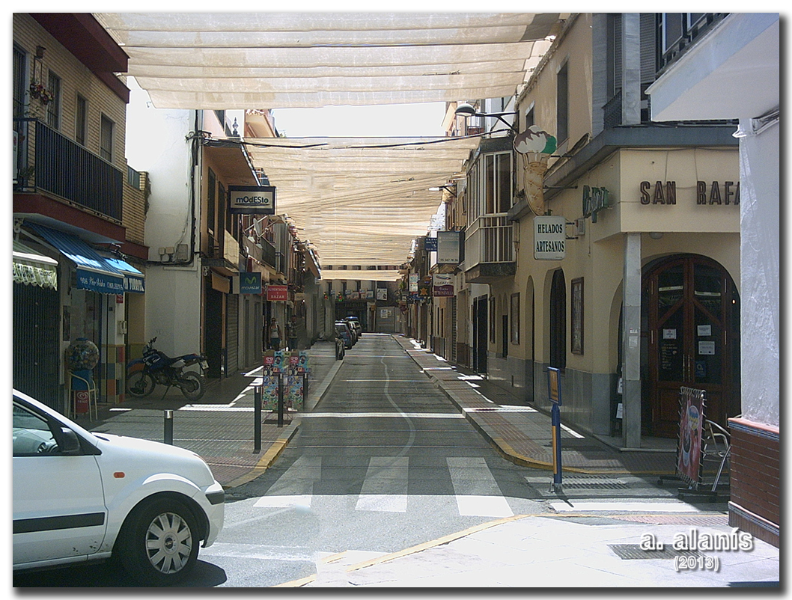
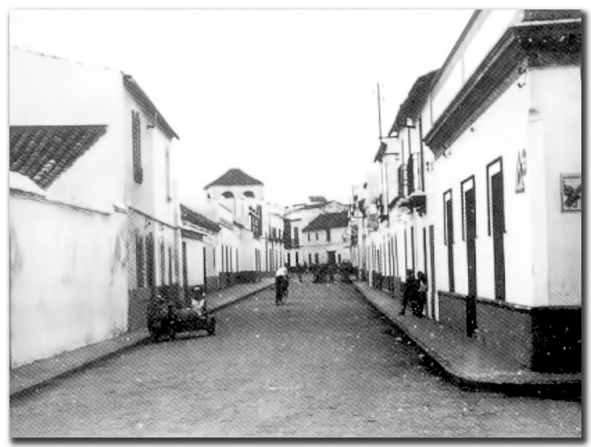
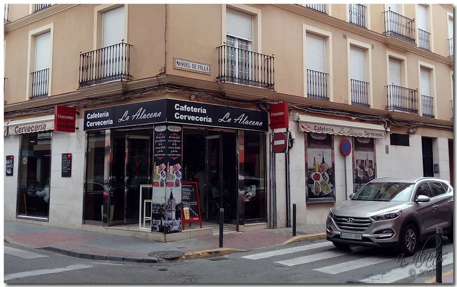
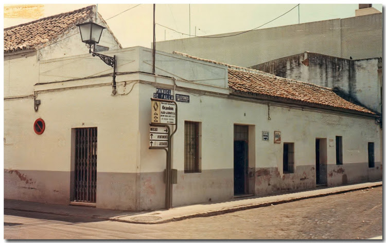

Galería de Fotos del Ayer
Pase el cursor por la imagen para ver el estado actual


Calle Antonia Díaz esquina a Plaza Menéndez y Pelayo sobre los años 60. Foto actual julio 2013


Antigua taberna de El Loreto esquina a la calle Castelar (Actual Manuel de Falla) con Antonia Díaz.
Hoy en su lugar en vez de una 'taberna', se encuentra una 'Cafetería Cervecería'.